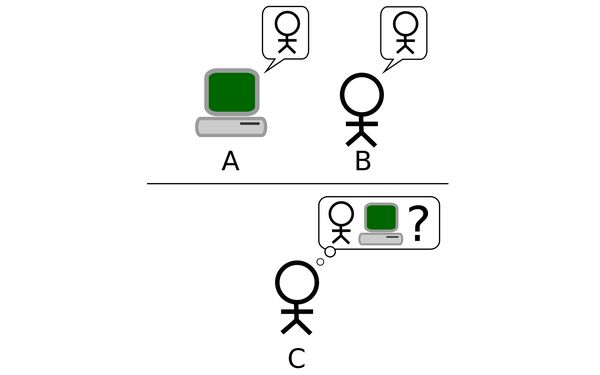
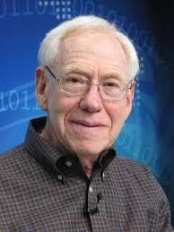
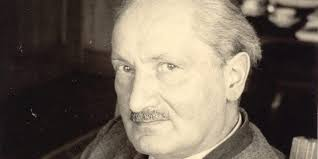

Alan Turing nasce a Londra nel 1912. Ammesso nel 1931 al King’s College dell’Università di Cambridge, vi studiò meccanica quantistica, logica e calcolo delle probabilità, laureandosi nel 1934 col massimo dei voti. Nel 1936, trasferitosi alla Princeton University per specializzarsi, pubblicò il fondamentale articolo On Computable Numbers, with an Application to the Entscheidungsproblem, in cui descrisse la cosiddetta “macchina di Turing”. Durante la seconda guerra mondiale, ebbe una parte di primo piano nella forzatura del sistema Enigma, impiegato dai tedeschi per cifrare i messaggi.
Turing scrisse, in questi anni, tre importanti relazioni: Intelligent Machinery (1948), Computing Machinery and Intelligence(1950), Digital Computers Applied to Games (1953), divenendo così un antesignano dell'intelligenza artificiale, anche grazie allo studio delle relazioni tra le macchine e la neurologia e fisiologia degli esseri viventi. Dal 1952 alla morte, nel 1954, si dedicò alla formalizzazione matematica della biologia, in particolare alla morfogenesi, e studiando i collegamenti tra le forme vegetali e i numeri di Fibonacci. Arrestato nel 1952 per omosessualità, fu condannato alla castrazione chimica, che lo rese impotente. Fu probabilmente questo il motivo che nel 1954 indusse Turing al suicidio, che mise in atto mangiando una mela attossicata col cianuro di potassio.
Nell’articolo Computing Machinery and Intelligence (Mind, 1950), Turing descrisse un Gedankenexperiment: un esperimento concettuale, per stabilire se una macchina (un computer) sia o no in grado di pensare. L’esperimento, oggi noto come test di Turing, prende lo spunto dal “gioco dell'imitazione”, nel quale un esaminatore cerca di distinguere un uomo da una donna basandosi soltanto sulle risposte a una serie di domande. Turing immagina di sostituire ad uno dei due una macchina, assegnando all’esaminatore il compito di distinguere l’uomo dal computer. La versione modificata del gioco consente a Turing di affrontare il problema: le macchine possono pensare?

MACCHINA = macchina digitale a stati finiti, “macchina di Turing” (MT) = Dispositivo ideale, munito di un nastro di carta illimitato diviso in caselle, che può eseguire qualsiasi operazione descrivibile mediante un algoritmo (macchina universale).
Dreyfus ritiene che le macchine non siano in grado di riprodurre con efficacia il carattere olistico, situazionale e corporeo dell’intelligenza umana: per eguagliare l’uomo, le macchine dovrebbero avere bisogni, desideri, emozioni, sensazioni, cioè possedere un corpo simile al nostro, con tutta la sua naturale complessità. Secondo Dreyfus non si riusciranno ad ottenere mai risultati soddisfacenti l’intelligenza dell’uomo sembra essere influenzata sia dalla totalità dell’organismo corporeo che dalla totalità dell’ambiente socio-culturale.
Hubert Dreyfus (1929-2017)
Un sistema per essere intelligente deve innanzitutto essere, ovvero essere vivo, essere nel mondo. E’ il Dasein il concetto fondamentale che caratterizza la natura dell’uomo come animale sociale; significa esistenza anche come vita, come agire ed essere nel mondo. L’uomo esprime le proprie capacità e abilità nell’interazione con gli strumenti, i mezzi, gli oggetti e gli altri esseri umani, dunque nel relazionarsi con il mondo. Nel campo dell'IA si stanno concentrando sforzi sempre maggiori per fornire alle macchine una forma di senso comune, un background culturale che permetta di inserirle e farle “vivere” in un ambiente tramite sensori e mezzi di comunicazione che riproducono le abilità dell’uomo garantite dai “cinque sensi”.
Martin Heidegger (1889-1976)
Nasce il bisogno di indagare su coscienza, emozioni e intenzionalità: l’interrogativo ricorrente è se queste esistano, se siano necessarie per l’intelligenza e il pensiero, e che ruolo possiedano nel rapporto tra mente e corpo, tra soggetto e realtà esterna. In questo dibattito si inseriscono principalmente due visioni: quella fisicalista (funzionalista) collegata all'IA forte e quella non-fisicalista connessa all'IA debole.
Rifiuta una separazione tra mondo mentale e mondo esterno e ritiene che il cervello non sia sufficiente a produrre la mente. Per i non-fisicalisti l’intelligenza ha bisogno di una volontà che la guidi e la razionalità deve essere mossa da fini e motivazioni che non possono essere il prodotto delle elaborazioni interne di un sistema chiuso. L'IA inizia quindi a studiare l'intenzionalità e l'Artificial Consciousness.
Sostiene che un computer non sarà mai in grado di eguagliare la mente umana, ma potrà arrivare a simulare solo alcuni aspetti di essa, non riuscendo a riprodurli tutti contemporaneamente. La macchina è vista come uno strumento potentissimo, che ci permette di formulare e verificare ipotesi in una maniera più precisa e rigorosa. Fanno parte di questa categoria i ”sistemi di supporto alle decisioni”: strumenti informatici che usano dati e modelli matematici a supporto dei decision maker.
Riconduce gli stati mentali agli stati cerebrali (riduzionismo materialista). L’esperienza cosciente e le emozioni sono conseguenze di determinati processi chimici e fisici del corpo umano, e di configurazioni neuronali all’interno del cervello. Molti fisicalisti si definiscono funzionalisti, ossia considerano gli eventi mentali come condizioni causali tra input e output caratterizzate da funzioni: perciò due sistemi qualsiasi possiedono gli stessi stati mentali se caratterizzati da processi causali isomorfi; una macchina potrebbe quindi avere gli stessi stati mentali di un uomo. Questa visione della realtà è di tipo galileaiano, e trova il suo fondamento nel supporto fornito dalle scienze della complessità, che a partire da Poincarè, individuano la complessità e l’impredicibilità di un sistema deterministico, e introducono il concetto di caos deterministico, ossia il cui stato è determinato univocamente da quello iniziale.
Sostenuta soprattutto dai funzionalisti, ritiene che un computer correttamente programmato possa raggiungere un livello di intelligenza non distinguibile da quello umano. Secondo l’IA forte il calcolatore non è semplicemente uno strumento per lo studio della mente, ma piuttosto, quando sia programmato opportunamente, è una vera mente, che quindi comprende e possiede altri stati cognitivi.